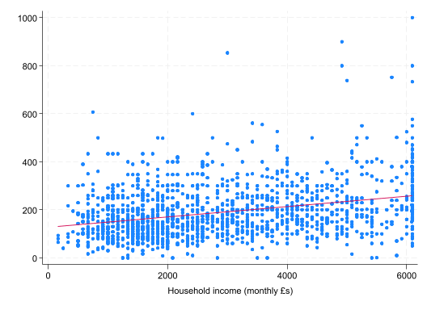
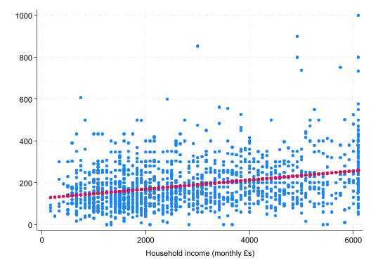
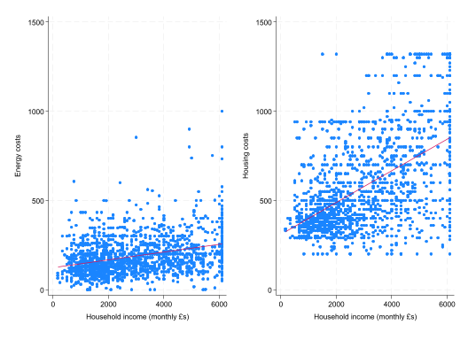
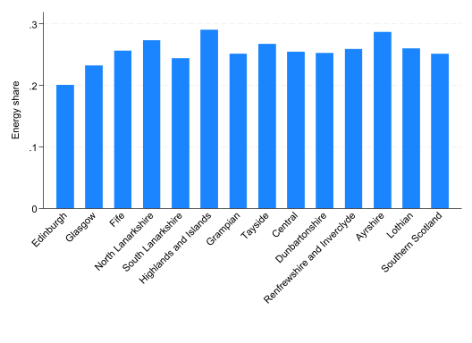

* Title: Econometrics Lab 2: Linear Regression in Stata
* Author: [INSERT NAME]
* Date: [INSERT DATE]
* ============================================================================ *
* Clear all objects in memory
clear all
* Set directory
cd "[INSERT FILE PATH]\EC3301\Lab 2"
* Start log
cap log close
log using lab-2-log.txt, replace text
* ============================================================================ *
* Part 1
* ============================================================================ *
* Part 2
* ============================================================================ *
* Close log
log closeEconometrics Lab 2
Linear Regression in Stata
This lab was motivated by the ongoing “cost of living crisis” that has many politicians, economists, and policy specialists working hard to help households. It focuses on two aspects of this crisis: the cost of energy (part 1) and access to (un)healthy food (part 2). The first part makes use of the Scottish Household Survey (2023) sample from Lab 1, while the second part uses a county level dataset from the US Department of Agriculture.
Setup
Before we get started,
Create a new folder for this week’s lab (“EC3301/Lab 2”) in the same location as your “EC3301/Lab 1” folder.
Go to Moodle and download the datasets provided under Week 4. (You will also need access to the “shs2023.dta” file from Lab 1.)
Move the new files, as well as a copy of “shs2023.dta”, to “EC3301/Lab 2”.
Open Stata and create a new .do file. Save it as “Lab 2/lab-2.do”
Add the following to your .do file; editing the file path to match your folder structure.
Part 1: Energy costs in Scotland
The Scottish Household Survey (2023) includes information about the amount of money households spend on energy to heat and light their homes (i.e., electircity, gas, etc.). During this lab we will investigate whether lower income households spend a disproportionate amount of money on energy. Why does this matter? Well, if true, it means that energy shocks affect lower income households more.
- Having run the first few lines of the above .do file code, add the following line under
* Part 1and run. This is code from Lab 1.
use shs2023.dta, clear
// Stata should be able to find the file if the computer director (cd) is set correctly.
rename hb1 dwell_type
label var dwell_type "Type of dwelling"
rename hb509 own_grp
label var own_grp "Ownership of the dwelling"
label def QUINTILE 1 "Bottom: 0-20%" 2 "Lower: 20-40%" 3 "Middle: 40-60%" 4 "Upper: 60-80%" 5 "Top: 80-100%"
label val MD20QUIN QUINTILE
gen amt_sum = .
replace amt_sum = 1 if rent_amt > 0 & rent_amt != .
replace amt_sum = 2 if mortgage_amt > 0 & mortgage_amt != .
replace amt_sum = 3 if shared_ownership_amt > 0 & shared_ownership_amt != .
gen payment = .
replace payment = rent_amt if amt_sum==1
replace payment = mortgage_amt if amt_sum==2
replace payment = shared_ownership_amt if amt_sum==3- The dataset includes a set of variables
htcostsum_1-htcostsum_9andhtcostamt_1-htcostamt_9. Try to understand the relationship between each variable by first usingtabto check the values ofhtcostsum_*and thentab htcostsum_*, sum(htcostamt_*)to check how they relate to one another. For example,
tab htcostsum_1
tab htcostsum_1, sum(htcostamt_1)
Cost of electricity - summary |
variable | Freq. Percent Cum.
------------------------------------+-----------------------------------
Use, pay separately, amount given | 955 29.83 29.83
Use, pay combined with other fuel | 1,956 61.11 90.94
Use, do not pay for fuel (free/DWP) | 9 0.28 91.22
Use, pay separately, amount missing | 281 8.78 100.00
------------------------------------+-----------------------------------
Total | 3,201 100.00
Cost of |
electricity | Summary of Cost of electricity -
- summary | amount variable
variable | Mean Std. dev. Freq.
------------+------------------------------------
Use, pay | 1670.3916 1204.754 955
Use, do n | 0 0 9
------------+------------------------------------
Total | 1654.7967 1209.835 964Create a variable equal to the sum of all energy costs called
energy_cost. The most accurate way to do this is using theegencommand along with therowtotal()function (typehelp egenin the command line to learn about the command). You will want to add the optionmissing. This command could also have been used to create thepaymentvariable in Lab 1.How many observations have missing, zero, and positive (non-missing values). Check that your output corresponds to mine.
count if energy_cost ==.
count if energy_cost==0
count if energy_cost>0 & !missing(energy_cost) 7,856
13
2,627sum energy_cost, det
energy_cost
-------------------------------------------------------------
Percentiles Smallest
1% 240 0
5% 780 0
10% 1032 0 Obs 2,640
25% 1440 0 Sum of wgt. 2,640
50% 2080 Mean 2376.193
Largest Std. dev. 1351.822
75% 3000 11000
90% 4160 11200 Variance 1827423
95% 4800 11600 Skewness 1.670538
99% 6600 12000 Kurtosis 8.57936This new variable measures energy costs at an annual level. Transform the variable - using the
replacecommand - to a monthly value. Then label it “Household energy costs (monthly £s)”.Rename
paymenttohousing_costand give it the label “Household housing costs (monthly £s)”. Does the variable have a similar number of non-missing and zero values toenergy_cost? Who would have a housing cost of £0? Wealthier or poorer households?Compare the new
housing_costvariable to the variable in the data calledhcost_amt. You can also usebrowse mortgage_amt rent_amt shared_ownership_amt hcost_amt housing_costto investigate why these two variables are not the same. Should we be concerned?
compare housing_cost hcost_amtCheck
housing_costagainstown_grp(a variable from Lab 1). It is clear that our variable ignores those who own outright or live rent free. Does this seem like a reasonable outcome?Create a new
incomevariable equal toannetinc\(/12\). Label the variable “Household income (monthly £s)”.Keep the sample of observations that have non-missing values for all three variables:
energy_cost,housing_cost, andincome. How many observations do we lose? There are multiple ways you can achieve this result:
- Select all observations where all variables are not equal to
.. (In Stata, not-equal-to is either~=or!=.)
keep if energy_cost!=. & housing_cost!=. & income!=.- Using the
missing()function combined with!symbol to denote not-missing.
keep if !missing(energy_cost) & !missing(housing_cost) & !missing(income)Create a scatter plot of
energy_costandincomeusing the commandscatter.Use the
twowaygraph command to overlay the scatter plot with a (linear) line of best fit. Here is what the output should look like:

Note, I have turned off the legend option.
- The line of best fit corresponds to the OLS estimator. Is the slope significantly different from 0? Based on the estimates, what fraction of an additional £ of income is spent on energy costs.
reg energy_cost income
Source | SS df MS Number of obs = 1,531
-------------+---------------------------------- F(1, 1529) = 181.72
Model | 1932042.83 1 1932042.83 Prob > F = 0.0000
Residual | 16255906.3 1,529 10631.7242 R-squared = 0.1062
-------------+---------------------------------- Adj R-squared = 0.1056
Total | 18187949.1 1,530 11887.5484 Root MSE = 103.11
------------------------------------------------------------------------------
energy_cost | Coefficient Std. err. t P>|t| [95% conf. interval]
-------------+----------------------------------------------------------------
income | .0217606 .0016142 13.48 0.000 .0185943 .0249269
_cons | 125.9565 5.410424 23.28 0.000 115.3438 136.5691
------------------------------------------------------------------------------- Use the
predictcommand to create the predicted energy for each householdenergy_hat(see Lecture 2 for assistance). Plot the predicted value alongside the actual value of energy.
(option xb assumed; fitted values)twoway (scatter energy_cost income) (scatter energy_hat income), legend(off)
- Create a similar graph for
housing_cost. You can combine the graphs into a single figure. Is one slope steeper than the other?
twoway (scatter energy_cost income) (lfit energy_cost income), ylabel(0(500)1500) legend(off) name(energy, replace) nodraw ytitle(Energy costs)
twoway (scatter housing_cost income) (lfit housing_cost income), ylabel(0(500)1500) legend(off) name(housing, replace) nodraw ytitle(Housing costs)
graph combine energy housing
- Create a new variable
energy_shareequal to energy costs as a share of energy PLUS housing costs. Check that your variable has a similar mean and sd to the output below.
sum energy_share
Variable | Obs Mean Std. dev. Min Max
-------------+---------------------------------------------------------
energy_share | 1,531 .2560186 .1108235 0 .7407407- Interpret the slope coefficient and \(\mathbf{R}^2\) from the model below. Use the p-value to test whether the relationship is statistically significant at a \(\alpha = 0.01\) significance level?
gen ln_income = ln(income)
reg energy_share ln_income
Source | SS df MS Number of obs = 1,531
-------------+---------------------------------- F(1, 1529) = 4.35
Model | .053289856 1 .053289856 Prob > F = 0.0372
Residual | 18.7379322 1,529 .012255024 R-squared = 0.0028
-------------+---------------------------------- Adj R-squared = 0.0022
Total | 18.7912221 1,530 .012281845 Root MSE = .1107
------------------------------------------------------------------------------
energy_share | Coefficient Std. err. t P>|t| [95% conf. interval]
-------------+----------------------------------------------------------------
ln_income | -.0092254 .004424 -2.09 0.037 -.0179032 -.0005476
_cons | .3279882 .0346289 9.47 0.000 .2600631 .3959134
------------------------------------------------------------------------------- One important factor which may determine a household’s energy usage in Scotland is location. Afterall, it gets a lot darker and colder in the Outer Hebrides compared with the sunny Kingdom of Fife. Try to replicate the following bar graph showing the average share of expenditure on energy by area. See Lab 1 for a reminder of how to make a bar graph.

- Estimate the multivariate model below. Why is Edinburgh missing from the model? Has the adjusted-\(\mathbf{R}^2\) increased?
rename hc4 bedrooms
reg energy_share ln_income hhsize bedrooms i.own_grp i.dwell_type i.area
NoteFactor variables
Categorical variables – like own_grp, dwell_type, and area – are referred to as factor variables in Stata. The values that the variables take on have no cardinal meaning. For example, in the dataset area==1 for households in Edinburgh and area==2 for households in Glasgow. Does this mean that Glasgow is \(2\times\) Edinburgh? No. Categorical variables like this need to enter the model as dummy variables, with each dummy variable denoting a different category.
The long way to do this is to create all the dummy variables. You can do this as followings,
tab area, gen(area)Fortunately, there is a way to tell Stata in the reg command that it should treat the variable as a factor variable and include a dummy for each value. You do this by adding i. in front of the regressor; for example,
reg energy_share i.area
Source | SS df MS Number of obs = 1,531
-------------+---------------------------------- F(13, 1517) = 5.97
Model | .914852231 13 .070373249 Prob > F = 0.0000
Residual | 17.8763699 1,517 .011784028 R-squared = 0.0487
-------------+---------------------------------- Adj R-squared = 0.0405
Total | 18.7912221 1,530 .012281845 Root MSE = .10855
------------------------------------------------------------------------------
energy_share | Coefficient Std. err. t P>|t| [95% conf. interval]
-------------+----------------------------------------------------------------
area |
Glasgow | .0311596 .0124056 2.51 0.012 .0068256 .0554936
Fife | .0557885 .0163798 3.41 0.001 .0236591 .0879179
North Lan.. | .0727155 .0157429 4.62 0.000 .0418354 .1035957
South Lan.. | .0430246 .0153378 2.81 0.005 .012939 .0731101
Highlands.. | .0892801 .0119498 7.47 0.000 .0658401 .11272
Grampian | .0506339 .0149819 3.38 0.001 .0212465 .0800214
Tayside | .0664639 .0134155 4.95 0.000 .0401489 .0927788
Central | .0540929 .0133303 4.06 0.000 .0279452 .0802406
Dunbarton~e | .0514564 .0169512 3.04 0.002 .0182061 .0847068
Renfrewsh.. | .058522 .0136945 4.27 0.000 .0316597 .0853842
Ayrshire | .0862456 .0140527 6.14 0.000 .0586808 .1138105
Lothian | .0591885 .0131192 4.51 0.000 .0334549 .0849221
Southern .. | .0503178 .0163798 3.07 0.002 .0181884 .0824472
|
_cons | .2008949 .0091745 21.90 0.000 .1828989 .218891
------------------------------------------------------------------------------The default is to exclude the smallest number as the base category (see start of Lecture 2 for a discussion of base categories). You can change this by declaring the base category.
reg energy_share ib2.area
Source | SS df MS Number of obs = 1,531
-------------+---------------------------------- F(13, 1517) = 5.97
Model | .914852231 13 .070373249 Prob > F = 0.0000
Residual | 17.8763699 1,517 .011784028 R-squared = 0.0487
-------------+---------------------------------- Adj R-squared = 0.0405
Total | 18.7912221 1,530 .012281845 Root MSE = .10855
------------------------------------------------------------------------------
energy_share | Coefficient Std. err. t P>|t| [95% conf. interval]
-------------+----------------------------------------------------------------
area |
Edinburgh | -.0311596 .0124056 -2.51 0.012 -.0554936 -.0068256
Fife | .0246288 .0159328 1.55 0.122 -.0066238 .0558814
North Lan.. | .0415559 .0152773 2.72 0.007 .0115891 .0715227
South Lan.. | .0118649 .0148595 0.80 0.425 -.0172824 .0410123
Highlands.. | .0581205 .0113294 5.13 0.000 .0358975 .0803434
Grampian | .0194743 .0144919 1.34 0.179 -.0089519 .0479005
Tayside | .0353042 .012866 2.74 0.006 .0100673 .0605412
Central | .0229333 .012777 1.79 0.073 -.0021292 .0479958
Dunbarton~e | .0202968 .0165197 1.23 0.219 -.0121071 .0527007
Renfrewsh.. | .0273623 .0131566 2.08 0.038 .0015553 .0531694
Ayrshire | .055086 .0135291 4.07 0.000 .0285483 .0816237
Lothian | .0280289 .0125566 2.23 0.026 .0033987 .052659
Southern .. | .0191582 .0159328 1.20 0.229 -.0120944 .0504108
|
_cons | .2320545 .0083503 27.79 0.000 .2156751 .248434
------------------------------------------------------------------------------Glasgow (area==2) is now the excluded base category.
Estimate the above model again setting the base categories to:
own_grp==2,area==3,dwell_type==1. Does this change the estimated slope coefficients for the non-factor variables?Using the evidence we have collected along with any other evidence you choose to create, do you think that the recent energy crisis will have had a disproportionate effect on lower or higher income households? What aspects have we ignored (or assumed away) in this discussion. [Hint: think about our sample selection decisions and variables we have ignored.]
Part 2: Fast-food access in the US
There is a large literature on the impact that fast-food access has on health outcomes; especially obesity (Currie et al. 2010). There is also a big policy debate in the US about ‘food deserts’ and access to healthy food alternatives, which includes a growing suspicion that fast-food outlets target underprivileged neighbourhoods with limited access to healthier alternatives. The following exercise investigates the relationship between fast-food access (at the county level) and the largest anti-hunger food programme in the US: the Supplemental Nutrition Assistance Program (SNAP). SNAP distributes vouchers/credits to participants to spend at SNAP-authorized stores. Rather cynically, this lab investigates whether fast-food chains locate themselves in areas with areas with a higher share of SNAP participants.
The data comes from the US Department of Agriculture’s Food Environment Atlas (2025). The dataset includes information on the number of food outlets (by category and adjusted for population), participation in food assistance programmes, and important county characteristics. The file “VariableList.csv” on Moodle includes useful descriptions of each variable.
Open the “usda25.csv”. As it is not a .dta file, you will need to import it. In the main Stata window, go to ’File>Import>Text data (delimited, *.csv,…)‘. This will open a new window. Select the file icon next to ’File to import:’ and locate the data in your “EC3301/Lab 2” folder. This should populate the ‘Preview:’ window. Select ‘OK’. In the output window you will see code starting with
import delimited. Copy this code and paste it in your .do file so that the action can be replicated.Generate a new variable
ln_pc_snapben17equal to the log ofpc_snapben17. The “VariableList.csv” file will show you that this is SNAP benefits per capita in 2017.Compute the correlation between 3 measures of SNAP exposure (at the county level):
ln_pc_snapben17,pct_snap17(% of population participate in SNAP, 2017), andsnapspth17(SNAP-authorized stored per 1000 people, 2017). Are the results surprising?
corr ln_pc_snapben17 snapspth17 pct_snap17Estimate 3 separate simple regression models of
ffrpth20(fast-food stores per 1000 people, 2020) against the above three measures of SNAP exposure. Interpret each slope coefficient. Which model has the highest \(\mathbf{R}^2\).Most SNAP-authorized stores are big grocery stores (e.g. Walmart, Target, Kroger, etc.). The data includes information on the total number of grocery stores (in 2016):
grocpth16. Are they highly correlated?
corr snapspth17 grocpth16(obs=3,058)
| snapsp~7 grocp~16
-------------+------------------
snapspth17 | 1.0000
grocpth16 | 0.4160 1.0000
- Estimate the multivariate model below, that controls for the poverty rate, number of full-service restaurants, number of grocery stores, and a metropolitan dummy variable. Is there a statistically significant relationship between the number of SNAP-authorized stores and fast-food stores, conditional on these other variables? And how does the coefficient compare to the simple model?
reg ffrpth20 snapspth17 povrate21 fsrpth16 grocpth16 metro23 pct_nhblack20 pct_hisp20 pct_65older20 pct_18younger20
Source | SS df MS Number of obs = 2,640
-------------+---------------------------------- F(9, 2630) = 218.44
Model | 86.0271632 9 9.55857369 Prob > F = 0.0000
Residual | 115.083924 2,630 .043758146 R-squared = 0.4278
-------------+---------------------------------- Adj R-squared = 0.4258
Total | 201.111087 2,639 .076207309 Root MSE = .20918
------------------------------------------------------------------------------
ffrpth20 | Coefficient Std. err. t P>|t| [95% conf. interval]
-------------+----------------------------------------------------------------
snapspth17 | .1879239 .0187666 10.01 0.000 .1511251 .2247226
povrate21 | -.0020137 .0011699 -1.72 0.085 -.0043077 .0002803
fsrpth16 | .3511523 .0102784 34.16 0.000 .3309977 .371307
grocpth16 | -.0009491 .0365364 -0.03 0.979 -.0725922 .070694
metro23 | .0473631 .0099608 4.75 0.000 .0278313 .0668949
pct_nhbla~20 | .0026196 .0003692 7.10 0.000 .0018956 .0033435
pct_hisp20 | .0009268 .0003332 2.78 0.005 .0002736 .0015801
pct_65old~20 | -.0181036 .0013502 -13.41 0.000 -.0207511 -.0154561
pct_18you~20 | -.0037655 .001913 -1.97 0.049 -.0075166 -.0000144
_cons | .6523536 .0677078 9.63 0.000 .5195876 .7851196
------------------------------------------------------------------------------Estimate the same multivariate model, but for the other measures of SNAP exposure. Are these relationships statistically significant?
The data has information about other federal nutrition programmes: (1) WIC (Women, Infants, Children); (2) National School Lunch Programme; (3) Summer Food Service Programme. Compare the participation rates of these programmes. Note, the latter two programmes measure participation as % of eligible children.
sum pct_snap17 pct_wic17 pct_nslp17 pct_sfsp17
Variable | Obs Mean Std. dev. Min Max
-------------+---------------------------------------------------------
pct_snap17 | 3,142 12.89266 3.170124 5.668505 22.05548
pct_wic17 | 3,142 2.142352 .4076869 .9728899 2.903674
pct_nslp17 | 3,142 58.94323 8.781746 39.65122 76.41203
pct_sfsp17 | 3,142 4.890883 2.271304 1.027063 19.48122Using these variables as the measure of exposure, do we find any evidence of a relationship with fast-food access in 2017.
Explore the data further to see if you can learn more about this relationship. One option might be to look at
pch_ffrpth_16_20in place offfrpth20as the outcome variable, since it captures the percentage change in fast-food establishments per 1000 people. Another option is to consider different controls. Ideally, these should be good controls. We will discuss this more after the break, but a bad control is a variable that could (theoretically) be an outcome of the variable of interest: in this instance, SNAP exposure. You could also use variables likepct_laccess_lowi19to investigate low access to stores among low income residents (i.e. ‘food deserts’).
References
Currie, Janet, Stefano DellaVigna, Enrico Moretti, and Vikram Pathania. 2010. “The Effect of Fast Food Restaurants on Obesity and Weight Gain.” American Economic Journal: Economic Policy 2 (3): 32–63.